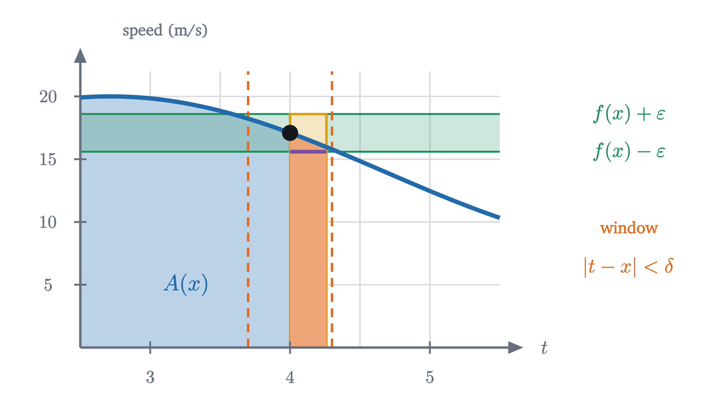
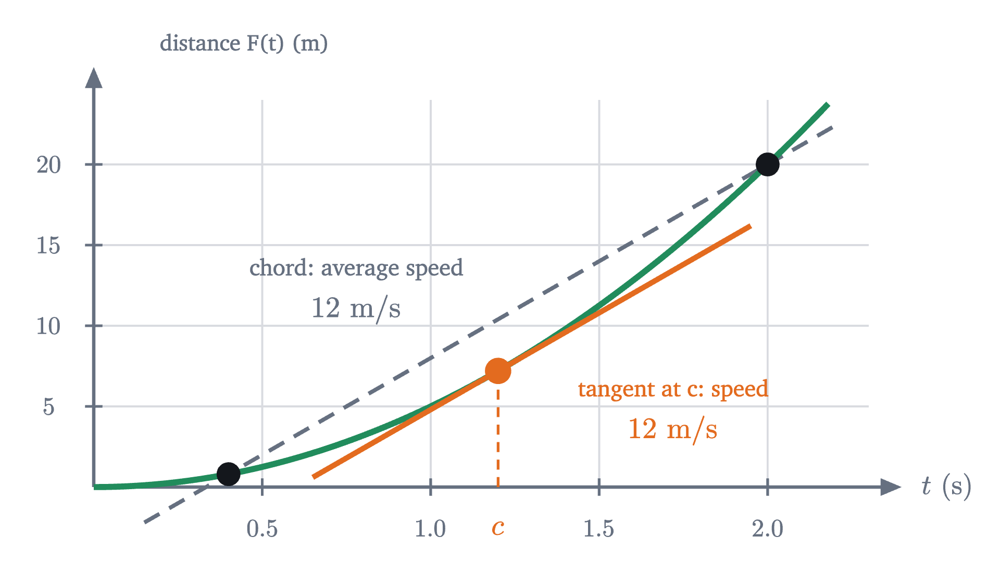
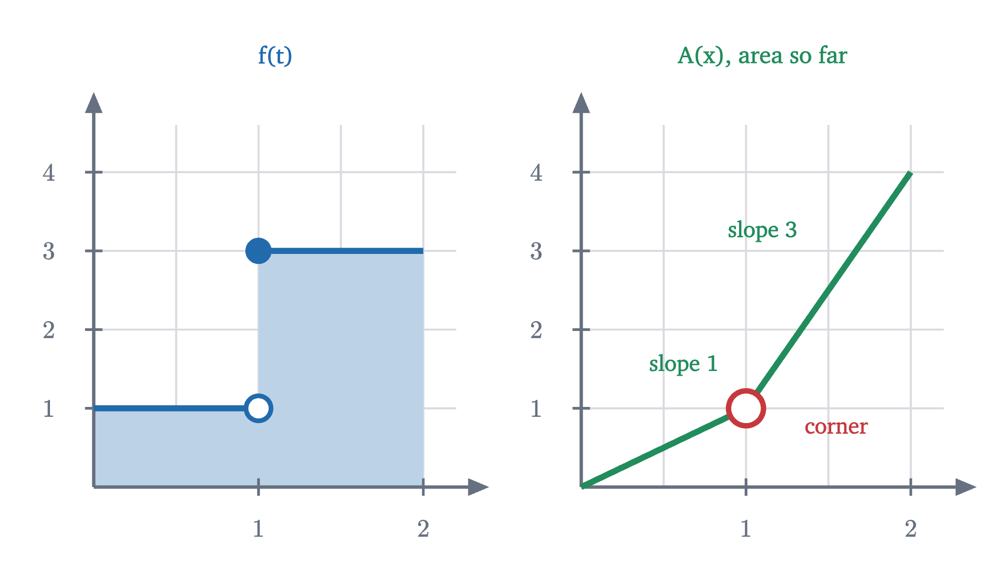

The fundamental theorem of calculus, explained and proved
Why area and slope undo each other. The rate at which an area grows is the height of the curve, and that turns every integral into a subtraction.
AssumesWhat is a derivative? Speed at a single instantWhat is an integral? Adding up to get area
The first lesson of this series took a falling ball’s distance, $5t^2$ meters after $t$ seconds, and by taking a limit of slopes found its speed, $10t$ meters per second. The last lesson took the speed $10t$ and, by taking a limit of sums of rectangles, recovered the distance: $\int_0^b 10t\,dt = 5b^2$. One procedure measures steepness. The other measures area. Nothing about slopes and areas suggests that they should be related, and yet on this example each exactly undid the other.
Was that an accident of the ball? The last lesson’s problems computed two other integrals with a variable upper limit, and we can test them.
| function $f(t)$ | $\int_0^b f(t)\,dt$, found from sums | derivative of that answer with respect to $b$ |
|---|---|---|
| $10t$ | $5b^2$ | $10b$ |
| $t$ | $\frac{1}{2}b^2$ | $b$ |
| $3t^2$ | $b^3$ | $3b^2$ |
Three times out of three, differentiating the integral returns the function we started with.
Pause and try
If the pattern holds, what should $\int_0^b t^3\,dt$ be? Find a function of $b$ whose derivative is $b^3$ and which is 0 when $b = 0$.
Show answerHide answer
We want something whose derivative is $b^3$. The power rule lowers the exponent by one and multiplies by the old exponent, so start from $b^4$, whose derivative is $4b^3$, and divide by 4: the guess is $\frac{b^4}{4}$. It is 0 at $b = 0$, as an integral over an interval of zero length should be. This is a guess from a pattern. By the end of the lesson it will be a theorem, with no sums of cubes required.
The pattern is the fundamental theorem of calculus. This lesson explains why it holds and proves it, and we will keep a careful account of which facts the proof uses.
What we are working from
Two definitions and two properties carry over. The derivative of $F$ at $x$ is $F'(x) = \lim_{h \to 0} \frac{F(x+h) - F(x)}{h}$, the limit of the average rate of change (lesson 1). The definite integral $\int_a^b f(t)\,dt$ is the number that the Riemann sums $\sum f(c_k)\,\Delta x_k$ approach as the slices of $[a, b]$ are made finer; it exists whenever $f$ is continuous on $[a, b]$, and it measures the signed area between the graph and the axis (lesson 6). From that lesson we need:
- Bounds. If $m \le f(t) \le M$ on $[a, b]$, then $m(b - a) \le \int_a^b f(t)\,dt \le M(b - a)$.
- Additivity. $\int_a^c f(t)\,dt = \int_a^b f(t)\,dt + \int_b^c f(t)\,dt$.
Finally, $f$ is continuous at $x$ if $\lim_{t \to x} f(t) = f(x)$: for every $\varepsilon > 0$ there is a $\delta > 0$ such that $|t - x| < \delta$ implies $|f(t) - f(x)| < \varepsilon$ (lesson 5).
The area so far
To differentiate an integral, the integral has to be a function of something. The table shows how: fix the left end and let the right end move. For a function $f$ that is continuous on $[a, b]$, define
the area under the graph of $f$ from $a$ up to $x$. The variable inside the integral is written $t$ because $x$ is now in use as the place where the area stops. In the animation above, $f$ is the car’s speed, and $A(x)$ is the reading of an odometer that was set to zero at time $a = 0$.
The question is how fast $A(x)$ grows as $x$ moves to the right.
How fast the area grows
Take $f(t) = t^2$ and $a = 0$, and stand at $x = 2$. From the last lesson, $\int_0^b 3t^2\,dt = b^3$, so by linearity $A(x) = \frac{x^3}{3}$ and $A(2) = \frac{8}{3}$. Now move the right edge from 2 to $2 + h$. The area gains a thin sliver.
Pause and try
Without computing $A(2.1)$, estimate the area of the sliver between $t = 2$ and $t = 2.1$ under $y = t^2$. Give a number it must exceed and a number it cannot reach. Then check against $A(2.1) - A(2)$, using $2.1^3 = 9.261$.
Show answerHide answer
The sliver is $0.1$ wide. Its height runs from $f(2) = 4$ on the left to $f(2.1) = 4.41$ on the right, so it contains a rectangle of area $4 \times 0.1 = 0.4$ and fits inside one of area $4.41 \times 0.1 = 0.441$. The true value is $A(2.1) - A(2) = \frac{9.261 - 8}{3} = 0.4203$, which is between them. Dividing by the width: the area grew at an average rate of $4.203$ per unit of $x$, a little more than $f(2) = 4$.
The sliver is nearly a rectangle. Its width is $h$, and its height is about $f(x)$, so its area is about $f(x) \cdot h$. Divide by $h$, and the rate at which the area is growing is about $f(x)$. The word “about” improves as $h$ shrinks, because the heights at the two edges of the sliver close in on each other. For $t^2$ at $x = 2$ we can check: $A'(x) = \frac{d}{dx}\frac{x^3}{3} = x^2$, which is 4 at $x = 2$.
That is the whole idea, and it does not depend on $f$ being $t^2$. A car moving at speed $f(x)$ adds distance at the rate $f(x)$, and in the same way a tall curve adds area fast and a low one adds it slowly.
To prove it we must replace “about” with an inequality, for a function that may rise and fall inside the sliver. The $t^2$ argument used the heights at the two edges, which worked because $t^2$ is increasing. In general we use continuity instead: near $x$, every height is within $\varepsilon$ of $f(x)$.

Read the proof against the picture. The green band is the first display. The gold and purple rectangles are the bounds property. Continuity of $f$ at the one point $x$ is what squeezed the sliver’s height to $f(x)$, and it was the only property of $f$ used at that point. Continuity on the rest of $[a, b]$ served only to guarantee that the integrals exist; everything else came from the bounds and additivity properties.
From a growth rate to a subtraction
Part 1 says that $A$ is a function whose derivative is $f$. Such functions have a name.
For $f(t) = 10t$, the area function $A(x) = 5x^2$ is an antiderivative. But it is not the only one, and that raises a difficulty. The plan for computing $\int_a^b f$ is to find an antiderivative by running the differentiation rules backwards, and then read the area off it. Running the rules backwards may well hand us a different antiderivative from $A$.
Pause and try
The function $F(x) = 5x^2 + 7$ also has derivative $10x$. Compare $F$ with $A(x) = 5x^2$ at $x = 0$ and $x = 2$. What quantity computed from $F$ still gives the area $\int_0^2 10t\,dt = 20$?
Show answerHide answer
$F(0) = 7$ and $F(2) = 27$, while $A(0) = 0$ and $A(2) = 20$. The values of $F$ are all 7 too large. But the change in $F$ is unaffected: $F(2) - F(0) = 27 - 7 = 20$. Adding a constant shifts the graph up without changing how much it rises, and the area is the rise.
So the conjecture is that $\int_a^b f(t)\,dt = F(b) - F(a)$ for any antiderivative $F$. To prove it we need to connect the rise of $F$ over an interval with the values of its derivative inside the interval. There is a theorem that does this.
We quote this theorem without proof. In terms of motion it says that if your average speed over a trip was 12 m/s, then at some moment your speedometer read exactly 12 m/s: it cannot have been above the average the whole time, or below it the whole time, and it does not jump. The standard proof reduces it to the fact that a continuous function on a closed interval attains a maximum value (the extreme value theorem), which is proved in real analysis. The reduction itself is short, and the last problem of the lesson on maxima and minima carries it out.

Now recall how the last lesson proved $\int_0^b 10t\,dt = 5b^2$. It cut the interval into slices and observed that the true distance fallen in each slice, $5x_k^2 - 5x_{k-1}^2$, lay between that slice’s lower and upper rectangles. The mean value theorem sharpens this for any $F$: the rise of $F$ over a slice is exactly the area of one rectangle on that slice, if its height is read at the right place.
For a typical Riemann sum the rectangles miss the area a little and the errors only vanish in the limit. Here a Riemann sum hits $F(b) - F(a)$ exactly at every fineness, so the limit of the sums has no choice.
Using the theorem
The difference $F(b) - F(a)$ is written $\bigl[F(x)\bigr]_a^b$. Every differentiation rule, read from right to left, is a source of antiderivatives.
| $f(x)$ | an antiderivative $F(x)$ | source |
|---|---|---|
| $x^n$, with $n \neq -1$ | $\dfrac{x^{n+1}}{n+1}$ | power rule |
| $\cos x$ | $\sin x$ | derivative of sine |
| $\sin x$ | $-\cos x$ | derivative of cosine |
| $f(x) + g(x)$, $c\,f(x)$ | $F(x) + G(x)$, $c\,F(x)$ | sum and constant-multiple rules |
(For exponents $n$ that are negative or not whole numbers, the first row applies on intervals where $x > 0$.)
Why “undo each other” is the right phrase
The two parts are two orders of doing the same pair of operations. Part 1 integrates first and then differentiates:
Part 2 differentiates first and then integrates. Writing $f = F'$ in its statement,
In the first order we get back exactly the function we started with. In the second we get back the function’s net change, because differentiation forgets an added constant and integration cannot restore it. For the ball this is the sentence “the integral of the speed is the change in position”. The same reasoning shows that any two antiderivatives of $f$ on an interval differ by a constant: if $G = F_1 - F_2$ has $G' = 0$ everywhere, the mean value theorem gives $G(x) - G(a) = G'(c)(x - a) = 0$ for every $x$.
Where continuity is needed
Both parts assume $f$ is continuous, and both can fail without it.
For part 1, let $f(t) = 1$ for $t < 1$ and $f(t) = 3$ for $t \ge 1$. This function is integrable on $[0, 2]$ (split the interval at the jump), and its area function is $A(x) = x$ for $x \le 1$ and $A(x) = 1 + 3(x - 1)$ for $x \ge 1$.

At $x = 1$ the difference quotient of $A$ is 3 for $h > 0$ and 1 for $h < 0$, so $A'(1)$ does not exist. The proof broke at its first step: no window around $t = 1$ keeps $f(t)$ within $\frac{1}{2}$ of $f(1)$. At every other point $f$ is continuous and $A' = f$ holds.
What was proved and what was quoted
Here is the account promised at the start.
- Proved here: both parts of the fundamental theorem.
- Proved in earlier lessons and used: the bounds property of the integral, and “differentiable implies continuous”.
- Sketched earlier and used: additivity of the integral over adjacent intervals.
- Quoted about continuous functions, not proved in this series: (1) a function continuous on $[a, b]$ is integrable on $[a, b]$ and on its subintervals, used in both parts for the integrals to exist; (2) the mean value theorem, used in part 2, which the lesson on maxima and minima derives from the extreme value theorem.
Part 1 used the continuity of $f$ directly, at the single point $x$. Both quoted facts depend on a property of the real numbers called completeness, which is where a course in real analysis begins.
Check yourself
What is $\dfrac{d}{dx}\displaystyle\int_0^x \sin(t^2)\,dt$?
What was hard
The hard step was noticing that an area could be differentiated at all, by letting its edge move. After that the argument is one picture: a sliver of width $h$ and height about $f(x)$. The idea worth keeping is the one in part 2’s proof. A total change is a sum of small changes, and each small change is a rate times a width. That sentence is behind most uses of the integral in science, where the rate is known and the total is wanted.
Problems
The first two are direct uses of part 2, the next four combine the lesson’s ideas, and the last two ask for proofs.
Problem 1
Evaluate $\displaystyle\int_1^4 (3x^2 - 2x)\,dx$.
Show solutionHide solution
The integrand is a polynomial, so it is continuous. An antiderivative is $F(x) = x^3 - x^2$, since $F'(x) = 3x^2 - 2x$. Then $F(4) - F(1) = (64 - 16) - (1 - 1) = 48$.
Problem 2
Evaluate (a) $\displaystyle\int_0^{\pi/2} \cos x\,dx$ and (b) $\displaystyle\int_1^2 \frac{1}{x^2}\,dx$. For (b), say why the theorem applies here although it failed on $[-1, 1]$.
Show solutionHide solution
(a) $\bigl[\sin x\bigr]_0^{\pi/2} = 1 - 0 = 1$. (b) On $[1, 2]$ the function $\frac{1}{x^2} = x^{-2}$ is continuous, because the interval does not contain 0. The table with $n = -2$ gives $F(x) = \frac{x^{-1}}{-1} = -\frac{1}{x}$, which is differentiable on $[1, 2]$ with $F'(x) = \frac{1}{x^2}$. So the integral is $\left(-\frac{1}{2}\right) - (-1) = \frac{1}{2}$. The answer is positive, as it must be for a positive integrand.
Problem 3
Let $A(x) = \displaystyle\int_1^x \sqrt{1 + t^3}\,dt$ for $x \ge 1$. Find $A(1)$ and $A'(2)$. Is $A$ increasing?
Show solutionHide solution
$A(1)$ is an integral over an interval of zero length, so $A(1) = 0$. The integrand is continuous for $t \ge 1$, so by part 1, $A'(x) = \sqrt{1 + x^3}$, and $A'(2) = \sqrt{9} = 3$. Since $A'(x) > 0$ for every $x$, the area only grows, so $A$ is increasing. We found all this without any formula for $A$.
Problem 4
A ball thrown upward has velocity $v(t) = 10 - 10t$ m/s. Use part 2 to find its change in height between $t = 0$ and $t = 2$, and between $t = 0$ and $t = 1.5$. Compare the first with the answer found from triangles in the last lesson.
Show solutionHide solution
An antiderivative of $10 - 10t$ is $F(t) = 10t - 5t^2$. From 0 to 2: $F(2) - F(0) = (20 - 20) - 0 = 0$ m, agreeing with the signed areas $+5$ and $-5$. From 0 to 1.5: $F(1.5) - F(0) = 15 - 11.25 = 3.75$ m. The ball rose 5 m by $t = 1$ and has fallen back $1.25$ m by $t = 1.5$.
Problem 5
Let $G(x) = \displaystyle\int_0^{x^2} \cos t\,dt$. Find $G'(x)$ using part 1 and the chain rule, then check by evaluating the integral first.
Show solutionHide solution
Write $A(u) = \int_0^u \cos t\,dt$, so that $G(x) = A(x^2)$. By part 1, $A'(u) = \cos u$. By the chain rule, $G'(x) = A'(x^2) \cdot 2x = 2x\cos(x^2)$. Check: by part 2, $A(u) = \sin u - \sin 0 = \sin u$, so $G(x) = \sin(x^2)$, whose derivative is $\cos(x^2) \cdot 2x$. The two agree. When the moving edge is at $x^2$ and not at $x$, its speed $2x$ multiplies the rate.
Problem 6
A student computes $\displaystyle\int_0^2 |x - 1|\,dx$ using $F(x) = \frac{(x-1)^2}{2}$ and gets $F(2) - F(0) = \frac{1}{2} - \frac{1}{2} = 0$. Explain the error and find the correct value.
Show solutionHide solution
$F'(x) = x - 1$, which equals $|x - 1|$ only for $x \ge 1$. For $x < 1$, $|x - 1| = 1 - x$, and $F' \ne f$ there, so $F$ is not an antiderivative of the integrand on $[0, 2]$ and part 2 does not apply to it. An integral of a function that is positive except at one point cannot be 0. Correct method: split by additivity at $x = 1$. On $[0, 1]$ the integrand is $1 - x$, with antiderivative $x - \frac{x^2}{2}$, giving $\frac{1}{2}$. On $[1, 2]$ it is $x - 1$, with antiderivative $\frac{(x-1)^2}{2}$, giving $\frac{1}{2}$. The integral is 1, the area of two triangles with base 1 and height 1.
Problem 7
Let $f$ be continuous on $[a, b]$. Prove that there is a point $c$ with $a < c < b$ such that $f(c) = \dfrac{1}{b - a}\displaystyle\int_a^b f(t)\,dt$. (The right side is called the average value of $f$ on $[a, b]$.)
Show solutionHide solution
Let $A(x) = \int_a^x f(t)\,dt$. By part 1, $A$ is continuous on $[a, b]$ and differentiable on $(a, b)$ with $A' = f$. So the mean value theorem applies to $A$: there is a $c$ in $(a, b)$ with $A'(c) = \frac{A(b) - A(a)}{b - a}$. Now $A'(c) = f(c)$, $A(a) = 0$ and $A(b) = \int_a^b f(t)\,dt$, which gives the claim. For the car, it says that at some moment during the ten seconds the speed equalled the average speed $142.9 / 10 = 14.29$ m/s.
Problem 8
Give a second proof of part 2 from part 1, as follows. Let $f$ and $F$ be as in part 2 and let $A(x) = \int_a^x f(t)\,dt$. (a) Show that $F - A$ is constant on $[a, b]$. (b) Evaluate the constant at $x = a$ and deduce $\int_a^b f(t)\,dt = F(b) - F(a)$.
Show solutionHide solution
(a) Let $G = F - A$. Both $F$ and $A$ are continuous on $[a, b]$ and differentiable on $(a, b)$, with $F' = f$ by hypothesis and $A' = f$ by part 1, so $G$ is continuous on $[a, b]$ and $G'(x) = 0$ on $(a, b)$. For any $x$ with $a < x \le b$, the mean value theorem on $[a, x]$ gives a $c$ with $G(x) - G(a) = G'(c)(x - a) = 0$. So $G(x) = G(a)$ for all $x$ in $[a, b]$. (b) Since $A(a) = 0$, the constant is $G(a) = F(a)$. So $F(x) - A(x) = F(a)$ for every $x$, and at $x = b$ this reads $A(b) = F(b) - F(a)$, which is the claim. This proof uses the same two quoted facts as the one in the lesson, and it needs the continuity of $A$ at the endpoints, which is why part 1 included it.